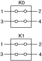
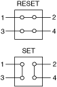

The following figures represents the NI PXI-2798 in the dual transfer switch topology.

The following figures show the two states of each transfer switch, reset and set.

Application
The dual transfer switch topology of the NI PXI-2798 enables customers to insert and remove components in a high-frequency signal path. To insert the DUT, configure the transfer switch in its reset state. To remove the DUT, configure the transfer switch in its set state.
You can control the channels using the niSwitch Connect Channels VI or the niSwitch_Connect function.
To set the transfer switch, disconnect the nc terminal from com, and connect no to com.
For example, to set the transfer switch K0, use the following code:
niSwitch_Disconnect(vi, "nc0", "com0")
niSwitch_Connect(vi, "no0", "com0")
|
Note To connect no to com you do not need to disconnect nc from com after the module has been reset or a call to the niSwitch Disconnect All Channels VI or the niSwitch_DisconnectAll function has been made. |
|
Note niSwitch_Disconnect(vi, "nc0", "com0") does not operate the relay until niSwitch_Connect(vi, "no0", "com0") is executed. Similarly, niSwitch_Disconnect(vi, "no0", "com0") does not operate the relay until niSwitch_Connect(vi, "nc0", "com0") is executed. |
To reset the transfer switch, disconnect the no terminal from com, and connect nc to com.
For example, to reset the transfer switch K0, use the following code:
niSwitch_Disconnect(vi, "no0", "com0")
niSwitch_Connect(vi, "nc0", "com0")
When scanning the NI PXI-2798, a typical scan list entry could be nc0->com0;. This entry resets transfer switch K0.